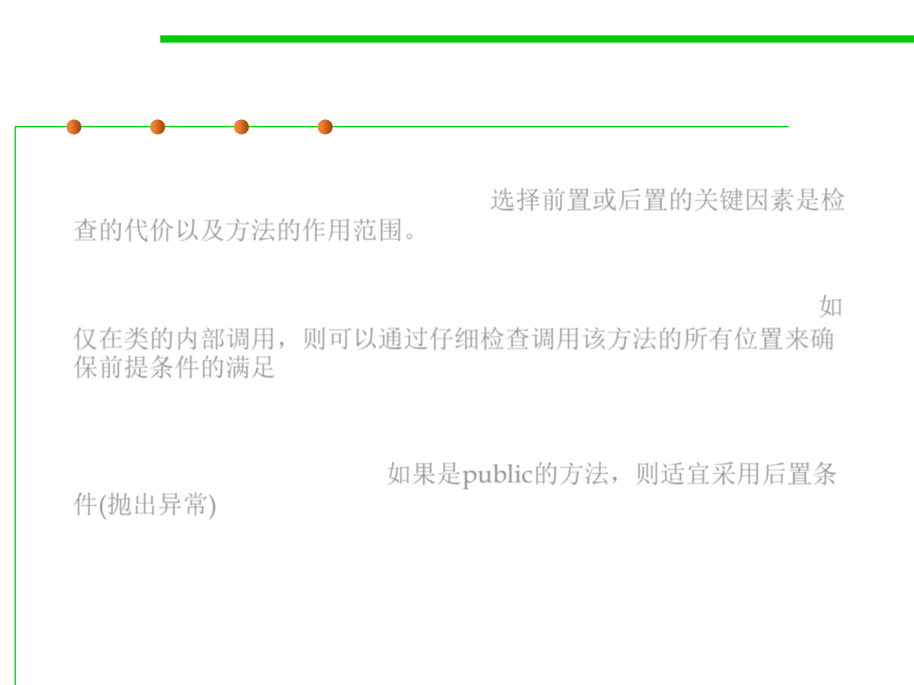

Precondition or postcondition?
3.2 Designing Specification
▪ The key factors are the cost of the check (in writing and executing
code), and the scope of the method. 选择前置或后置的关键因素是检
查的代价以及方法的作用范围。
▪ If it’s only called locally in a class, the precondition can be
discharged by carefully checking all the sites that call the method. 如
仅在类的内部调用，则可以通过仔细检查调用该方法的所有位置来确
保前提条件的满足
▪ If the method is public, and used by other developers, it would be
less wise to use a precondition. Instead, like the Java API classes, you
should throw an exception. 如果是public的方法，则适宜采用后置条
件(抛出异常)